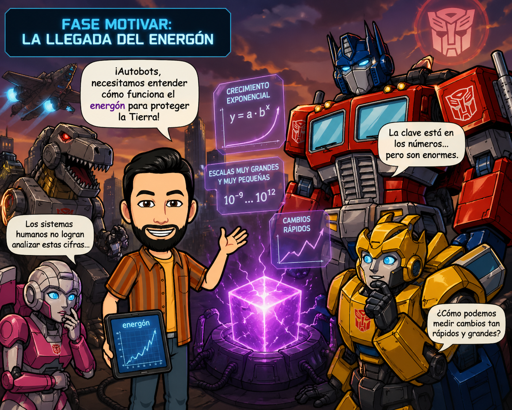
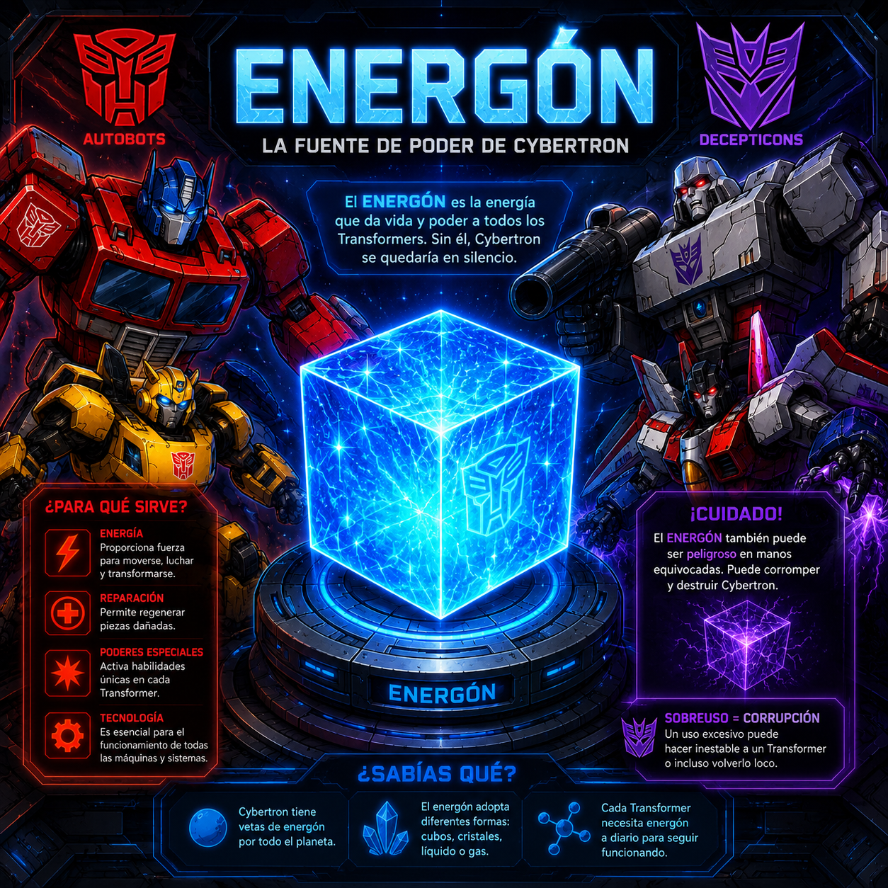
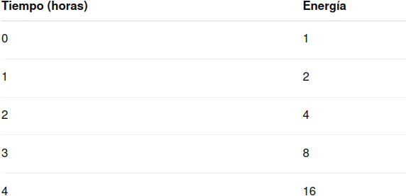
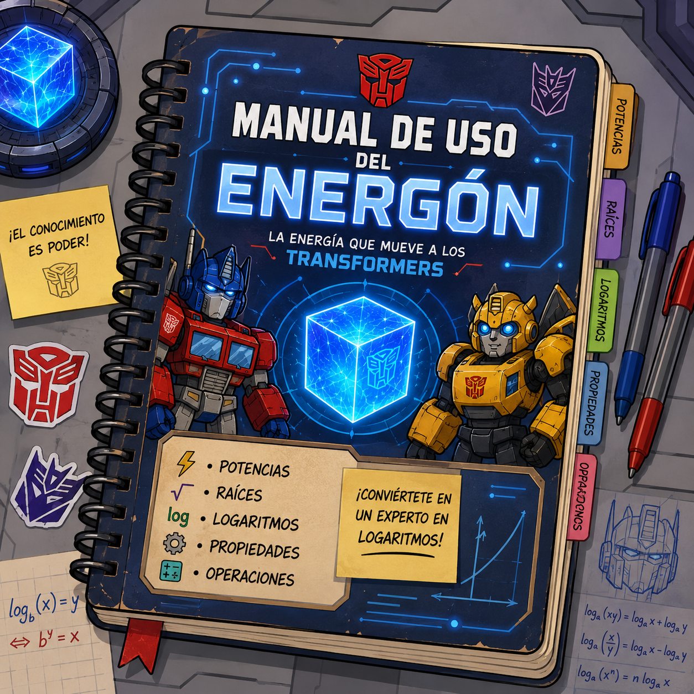
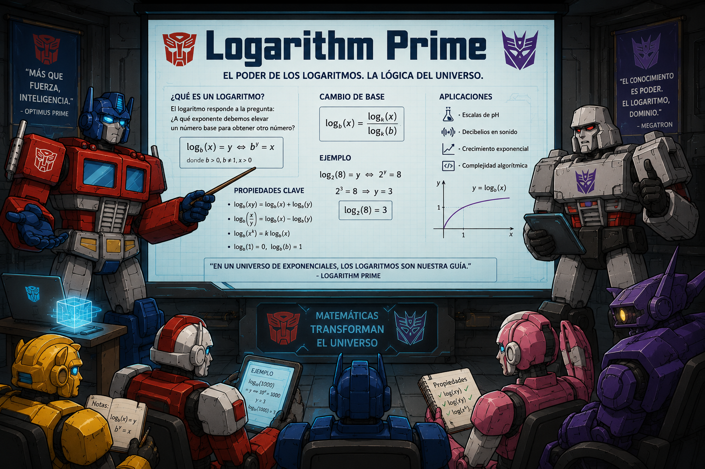
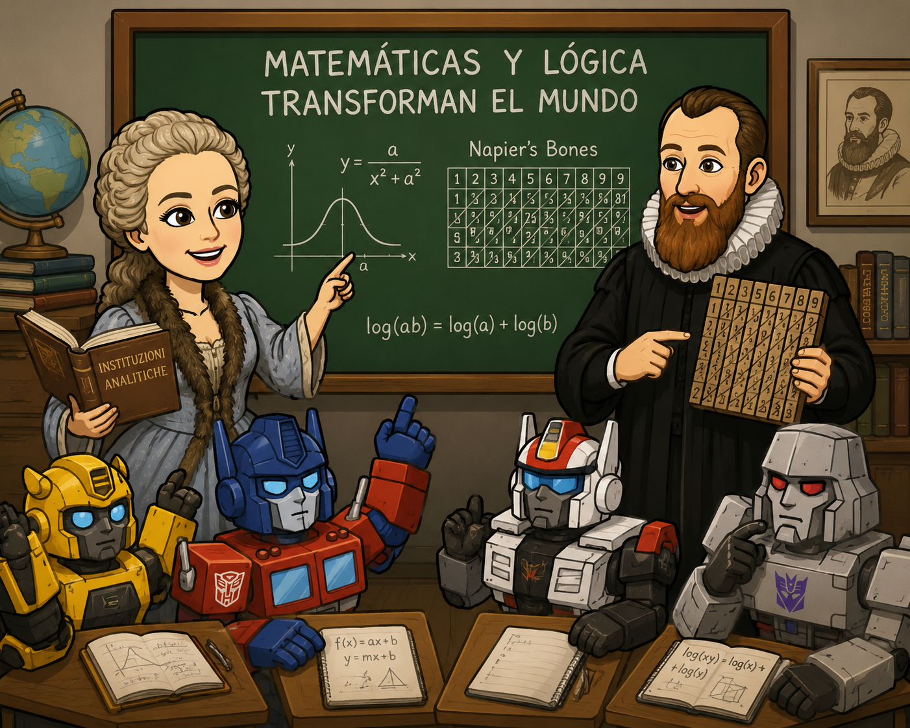
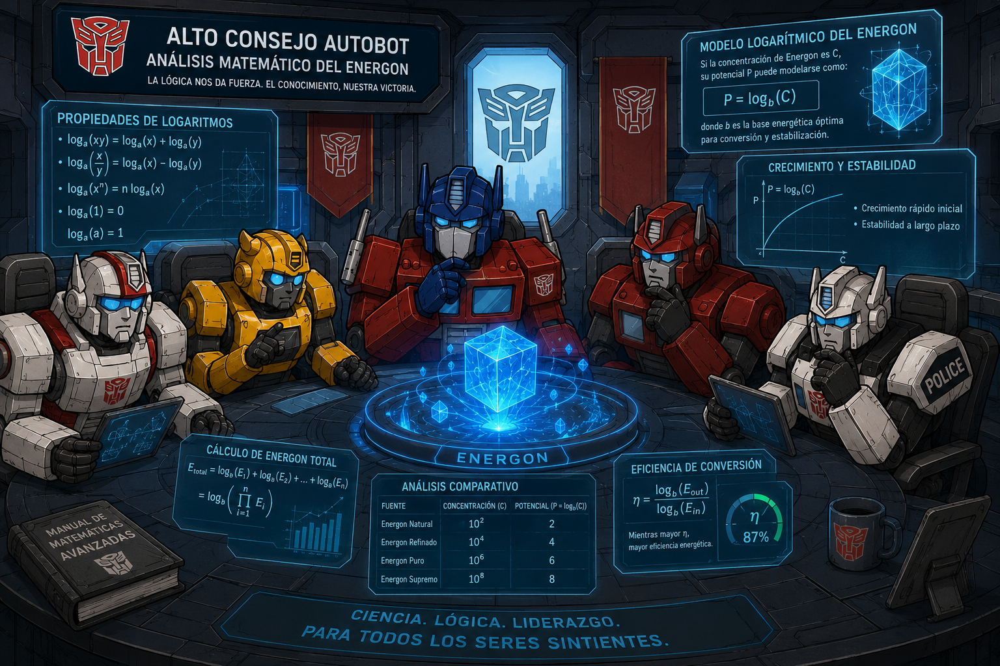

🔷 FASE MOTIVAR: La llegada del energón
Un fenómeno extraño ha sido detectado en la Tierra. Una fuente de energía desconocida, llamada energón, está generando cambios muy rápidos y difíciles de medir. Los sistemas humanos no son capaces de analizar correctamente su crecimiento… y la situación empieza a descontrolarse.
En ese momento, un grupo de Transformers llega al planeta con una misión urgente: comprender cómo funciona esta energía para evitar consecuencias catastróficas. Sin embargo, se encuentran con un problema inesperado… ¡no entienden nuestras herramientas matemáticas!
Los Autobots necesitan vuestra ayuda.
Han descubierto que el energón crece y se transforma de una forma muy especial: a veces aumenta de manera explosiva, otras se reduce rápidamente… y los números que aparecen son demasiado grandes o demasiado pequeños para trabajar con ellos de forma directa.
👉 Pregunta clave:
¿Cómo podemos ayudar a los Transformers a entender y medir estos cambios de energía?
Para ello, tendréis que convertiros en expertos capaces de explicar y utilizar herramientas matemáticas que permitan simplificar estos cálculos y comprender mejor la realidad.
¿Seréis capaces de dominar el poder del energón?

🔧 FASE ACTIVAR: ¿Qué sabemos ya sobre el energón?
Antes de ayudar a los Autobots, necesitamos comprobar qué conocimientos tenemos sobre potencias y raíces. ¡Es hora de activar lo que ya sabes!
ACTIVIDAD 1: Recordando poderes básicos
Resuelve en tu cuaderno:
- \(2^3 =\)
- \(5^2 =\)
- \(10^4 =\)
- \(3^0 =\)
- \(7^1 =\)
👉 Pregunta: ¿Qué crees que significa elevar un número a una potencia? Escríbelo con tus palabras.
ACTIVIDAD 2: Raíces… ¿te suenan?
Calcula:
- \(\sqrt{25} =\)
- \(\sqrt{81} =\)
- \(\sqrt{100} =\)
- \(\sqrt{49} =\)
👉 Pregunta: ¿Qué relación crees que hay entre las raíces y las potencias?
ACTIVIDAD 3: Detectives del cálculo
Observa y responde:
- \(2^3 \cdot 2^2 =\)
- \(5^4 : 5^2 =\)
👉 Pregunta:
¿Qué ocurre con los exponentes cuando multiplicas o divides potencias de la misma base? Intenta explicarlo.
ACTIVIDAD 4: Pensamos juntos
En parejas, comentad:
- ¿Dónde has visto potencias o raíces en la vida real?
- ¿Para qué crees que pueden servir?
Después, escribid al menos un ejemplo real en el cuaderno.
ACTIVIDAD 5: Reto del energón ⚡
Imagina que el energón de un Autobot se multiplica por 2 cada hora.
Si empieza con 1 unidad…
👉 ¿Cuánta energía tendrá después de 1 hora?
👉 ¿Y después de 2 horas?
👉 ¿Y después de 3 horas?
👉 Pregunta final:
¿Cómo crees que podríamos calcular esto de forma rápida sin hacerlo paso a paso?
💬 Importante:
No pasa nada si te equivocas. Esta fase es solo para ver qué recuerdas y qué necesitamos reforzar. ¡El error también nos ayuda a aprender!

🔍 FASE EXPLORAR: Descubriendo el poder oculto del energón
Los Autobots han detectado que la energía del energón crece y disminuye de formas muy extrañas… Necesitan vuestra ayuda para investigar qué está pasando.
En esta fase no tienes que saberlo todo, se trata de probar, observar y sacar conclusiones.
ACTIVIDAD 1: Crecimiento misterioso
Observa la siguiente tabla:

👉 Responde:- ¿Qué le ocurre a la energía cada vez que pasa una hora?
- ¿Podrías continuar la tabla hasta la hora 6?
- ¿Serías capaz de escribir una expresión matemática que represente este crecimiento?
💡 Pista: intenta relacionarlo con las potencias…
ACTIVIDAD 2: El problema inverso
Ahora piensa al revés:
Un Autobot tiene 64 unidades de energón, y sabemos que su energía se ha ido duplicando cada hora.
👉 Responde:
- ¿Cuántas horas han pasado desde que tenía 1 unidad?
- ¿Cómo lo has averiguado?
- ¿Te ha resultado fácil o difícil? ¿Por qué?
💭 Reflexiona: ¿Qué tipo de operación necesitas hacer cuando conoces el resultado pero no el “exponente”?
ACTIVIDAD 3: Investigamos con la calculadora
Usa la calculadora para completar:
- \(2^5 =\)
- \(2^6 =\)
¿Qué potencia de 2 da como resultado 128?
¿Y cuál da 256?
👉 Responde:
- ¿Cómo podrías encontrar el exponente sin probar uno a uno?
- ¿Crees que debería existir una operación que haga eso directamente?
ACTIVIDAD 4: Energía en el mundo real 🌍
Algunas magnitudes del mundo real crecen muy rápido:
- El número de bacterias en un cultivo.
- La intensidad de un terremoto.
- La acidez de una sustancia (pH).
👉 En grupo, comentad:
- ¿Por qué crees que estos fenómenos crecen tan rápido?
- ¿Sería útil tener una forma más sencilla de trabajar con números tan grandes?
Escribe una conclusión breve en tu cuaderno.
ACTIVIDAD 5: Reto Autobot 🤖
Queremos saber cuántas veces hay que multiplicar un número por sí mismo para obtener otro.
Por ejemplo:
👉 \(2^? = 32\)
Intenta resolverlo.
Explica el proceso que has seguido.
Inventa otro ejemplo parecido y propónselo a un compañero/a.
💬 Conclusión de la misión:
Estás empezando a descubrir que:
Hay situaciones donde conocemos el resultado… pero no el exponente.
Resolver eso no siempre es fácil con lo que ya sabemos.
⚡ Pregunta final:
¿Qué herramienta matemática crees que necesitaríamos para resolver este tipo de problemas de forma rápida?
FASE ESTRUCTURAR: ⚙️ Manual de uso del energón
Los Autobots necesitan un manual claro y fiable para poder usar el energón sin errores. Durante la explicación del profesor, tu misión será construir ese manual en tu cuaderno.
ACTIVIDAD 1: Construimos el manual
Durante la explicación, copia, organiza y completa en tu cuaderno los siguientes apartados:
🔹 1. Potencias
- Definición de potencia.
- Elementos: base y exponente.
- Ejemplos claros.
🔹 2. Raíces
- Qué es una raíz cuadrada.
- Relación entre raíz y potencia.
- Ejemplos.
🔹 3. Logaritmos
- Qué es un logaritmo (explicado con tus palabras).
- Relación entre potencia y logaritmo.
- Ejemplos sencillos.
🔹 4. Propiedades de los logaritmos
- Anota y explica:
- Logaritmo de un producto.
- Logaritmo de un cociente.
- Logaritmo de una potencia.
- Logaritmo de una raíz.
- Cambio de base de un logaritmo.
Incluye ejemplos de cada una.
🔹 5. Operaciones con logaritmos
- Realiza los ejemplos que se hagan en clase.
- Añade al menos un ejemplo propio.
ACTIVIDAD 2: Participamos en la explicación
Durante la clase:
- Resuelve en tu cuaderno los ejercicios que proponga el profesor.
- Sal a la pizarra cuando se te pida.
- Pregunta cualquier duda que tengas.
ACTIVIDAD 3: Practicamos
Realiza en tu cuaderno:
- Las actividades del libro indicadas por el profesor.
- Las fichas de Google Classroom (o la plataforma de enseñanza virtual oportuna).
ACTIVIDAD 4: Revisamos nuestro manual
Cuando terminemos:
- Relee tu cuaderno.
- Comprueba que está ordenado, claro y completo.
- Corrige los errores.
👉 Añade un título final:
“Manual de uso del energón – versión final”
💬 Importante: Este manual será tu herramienta para:
- Entender los problemas.
- Preparar el proyecto.
- Estudiar para el examen.
Si está bien hecho, te servirá para todo lo que viene después.

⚙️ Domando el poder del energón
Después de investigar, ha llegado el momento de poner orden a todo lo que has descubierto. Ahora vas a aprender las herramientas matemáticas que usan los Autobots para controlar la energía: potencias, raíces y logaritmos.
ACTIVIDAD 1: Ponemos nombre a lo que ya sabemos
Copia en tu cuaderno y completa:
Una potencia es una forma de expresar una multiplicación repetida.
Ejemplo: \(2^3 =\) ______
En una potencia:
- La base es: ______
- El exponente es: ______
👉 Explica con tus palabras qué significa \(5^3\).
ACTIVIDAD 2: Operamos con potencias
Calcula:
- \(2^3 \cdot 2^2 =\)
- \(5^4 : 5^2 =\)
- \((3^2)^3 =\)
- \(10^3 \cdot 10 =\)
👉 Después, completa:
- Al multiplicar potencias de la misma base… __________________
- Al dividir potencias de la misma base… __________________
- Una potencia elevada a otra potencia… __________________
ACTIVIDAD 3: Relación entre potencias y raíces
Calcula:
- \(\sqrt{36} =\)
- \(\sqrt{49} =\)
- \(\sqrt{64} =\)
👉 Ahora responde:
- ¿Qué relación hay entre \(\sqrt{64}\) y \(8^2\)?
- ¿Podrías explicar qué hace una raíz cuadrada?
ACTIVIDAD 4: Descubrimos los logaritmos ⚡
Cuando conocemos el resultado pero no el exponente, usamos una nueva herramienta: el logaritmo.
Observa:
👉 \(2^3 = 8\)
👉 Entonces: \(\log_2(8) = 3\)
Esto significa:
¿A qué número hay que elevar 2 para obtener 8? → 3
Ahora completa:
- \(2^4 = 16 \Rightarrow \log_2(16) =\) ___
- \(10^2 = 100 \Rightarrow \log(100) =\) ___
- \(3^2 = 9 \Rightarrow \log_3(9) =\) ___
ACTIVIDAD 5: Propiedades de los logaritmos
Observa y calcula:
- \(\log(10 \cdot 100) =\)
- \(\log(10) + \log(100) =\)
👉 ¿Qué observas?
Ahora prueba:
- \(\log(1000 : 10) =\)
- \(\log(1000) - \log(10) =\)
👉 Completa:
- \(\log(a \cdot b) =\) __________________
- \(\log(a : b) =\) __________________
ACTIVIDAD 6: Aplicamos lo aprendido
Resuelve:
- \(\log_2(32) =\)
- \(\log_3(27) =\)
- \(\log(1000) =\)
👉 Explica cómo lo has pensado, no solo el resultado.
ACTIVIDAD 7: Mini-reto del energón 🤖
Un Autobot necesita saber cuántas veces debe multiplicar su energía por 10 para pasar de 1 a 10000.
👉 Exprésalo con logaritmos y resuélvelo.
💬 Idea clave:
- Las potencias sirven para multiplicar muchas veces.
- Las raíces sirven para deshacer potencias.
- Los logaritmos sirven para encontrar el exponente.
⚡ Mensaje final del Alto Mando Autobot:
“Ahora ya tienes las herramientas para controlar el energón… pero aún queda lo más importante: usarlas en el mundo real.”
🚀 FASE APLICAR: ¡Aplicamos lo aprendido!
ACTIVIDAD: 🤖 Creamos el Logarithm Prime: ayudamos a los Autobots
Los Autobots han llegado a la Tierra y no entienden cómo usamos la energía aquí. Necesitan vuestra ayuda para comprender situaciones reales donde aparecen potencias, raíces y logaritmos.
💡 Misión: crear un producto final que les sirva como guía.
Vais a trabajar en grupos de 3 a 5 personas.
🔹 PASO 1: Organización del equipo
En vuestro grupo, repartid los roles (pueden combinarse):
- Coordinador/a
- Calculador/a
- Diseñador/a
- Portavoz
- Revisor/a
👉 Anotad en el cuaderno quién hace cada función.
🔹 PASO 2: La pregunta clave
Responded a esta pregunta:
⚡ ¿Podríais explicar a un Autobot 3 situaciones de la vida real donde aparezcan potencias, raíces o logaritmos?
🔹 PASO 3: Investigación
Buscad información (internet, libro, cuaderno…) sobre ejemplos reales, como por ejemplo:
- Crecimiento de poblaciones o bacterias
- Intereses en economía
- Escalas como el pH o los terremotos
👉 Elegid 3 situaciones diferentes.
🔹 PASO 4: Explicamos cada situación
Para cada una de las 3 situaciones, debéis incluir:
- Descripción del problema (explicado de forma sencilla).
- Expresión matemática (potencia, raíz o logaritmo).
- Resolución paso a paso.
- Explicación final como si el Autobot no supiera matemáticas.
🔹 PASO 5: Creamos la presentación
Utilizad una herramienta digital:
- Google Slides, LibreOffice/OpenOffice Impress, Power Point,...
- Canva
- Genially
👉 La presentación debe:
- Ser clara y ordenada
- Tener poco texto y apoyarse en esquemas o imágenes
- Incluir los cálculos bien explicados
Último paso: Revisamos antes de entregar
Antes de terminar:
✔️ Comprobad que las cuentas están bien
✔️ Revisad la ortografía
✔️ Aseguraos de que se entiende la explicación
✔️ Todos los miembros del grupo deben entender el trabajo
💬 Importante: No se trata solo de hacer cuentas, sino de:
- Explicar bien
- Trabajar en equipo
- Aplicar las matemáticas a la vida real
⚡ Mensaje del Alto Consejo Autobot:
“Si conseguimos entender vuestro planeta… será gracias a vuestro Logarithm Prime.”

🔍 ACTIVIDAD: Agnesi y Napier
🧠 Dos mentes brillantes de las matemáticas
Para entender mejor el origen de los logaritmos y su importancia, vamos a conocer a dos matemáticos muy importantes:
¿Qué tienes que hacer?
🔹 PASO 1: Búsqueda de información
Puedes trabajar en pareja para esta parte.
Busca información en Internet sobre ambos matemáticos:
- Cuándo y dónde vivieron.
- A qué se dedicaban.
- Qué aportaron a las matemáticas.
- Por qué son importantes hoy en día.
💡 Intenta usar páginas fiables y comparar la información.
🔹 PASO 2: Reflexionamos
Piensa sobre esto:
- ¿Qué relación hay entre Napier y los logaritmos?
- ¿Qué tipo de matemáticas estudiaba Agnesi?
- ¿Crees que lo tuvieron igual de fácil en su época? ¿Por qué?
🔹 PASO 3: Redacción individual
Ahora, de forma individual, escribe en tu cuaderno un texto donde:
- Expliques quiénes fueron Napier y Agnesi.
- Compares sus vidas y su trabajo.
- Incluyas una reflexión personal sobre las dificultades que pudieron tener, especialmente en el caso de Agnesi.
📏 Extensión orientativa: entre 10 y 15 líneas.
IMPORTANTE:
- El texto debe estar bien redactado y ordenado.
- Usa tus propias palabras (no copies y pegues).
- Cuida la presentación y la ortografía.
💬 Para pensar:
Durante mucho tiempo, las mujeres tuvieron muchas más dificultades para dedicarse a la ciencia.
👉 ¿Por qué crees que es importante conocer la historia de matemáticas como Agnesi?
✍️ Entrega: Trabajo manuscrito individual.

🏁 FASE CONCLUIR: ¡Concluimos!
🤖 El Alto Consejo Autobot
Ha llegado el momento de demostrar todo lo que habéis aprendido. Los Autobots evaluarán vuestro trabajo para comprobar si estáis preparados para ayudarles.
ACTIVIDAD 1: Presentamos el Logarithm Prime
PASO 1: Presentar:
Cada grupo realizará una exposición oral de su trabajo.
🔹 ¿Qué tenéis que hacer?
- Explicar vuestras 3 situaciones reales.
- Mostrar los cálculos (potencias, raíces o logaritmos).
- Explicar las soluciones de forma clara y sencilla, como si los Autobots no supieran matemáticas.
🔹 Requisitos importantes
- Todos los miembros del grupo deben participar.
- No se trata de leer, sino de explicar.
- Podéis apoyaros en vuestra presentación digital.
🔹 Duración
⏱️ Entre 5 y 10 minutos por grupo.
PASO 2: Coevaluamos 👀
Mientras otros grupos exponen:
- Completa la rúbrica de coevaluación que te dará el profesor.
- Valora aspectos como:
- Claridad de la explicación
- Corrección matemática
- Trabajo en equipo
- Presentación
👉 Sé respetuoso/a y justo/a en tus valoraciones.
PASO 3: Reflexión final ✍️
Después de las exposiciones, responde en tu cuaderno:
- ¿Qué has aprendido sobre potencias, raíces y logaritmos?
- ¿Qué parte te ha resultado más difícil?
- ¿En qué has mejorado durante este proyecto?
- ¿Cómo ha sido trabajar en grupo?
📏 Escribe entre 5 y 8 líneas.
ACTIVIDAD 2: ¡Autobots a examen! 📝
Realizarás una prueba escrita individual sobre:
- Potencias.
- Raíces.
- Logaritmos.
- Problemas aplicados.
🔹 Importante
- Lee bien los enunciados.
- Justifica tus respuestas.
- Cuida la presentación.
💬 Mensaje final del Alto Consejo Autobot:
“Habéis aprendido a controlar el energón… ahora debéis demostrarlo.”
🎯 Recuerda:
No solo se evalúan los resultados, sino también:
- Cómo explicas.
- Cómo trabajas en equipo.
- Cómo aplicas las matemáticas a la realidad.
